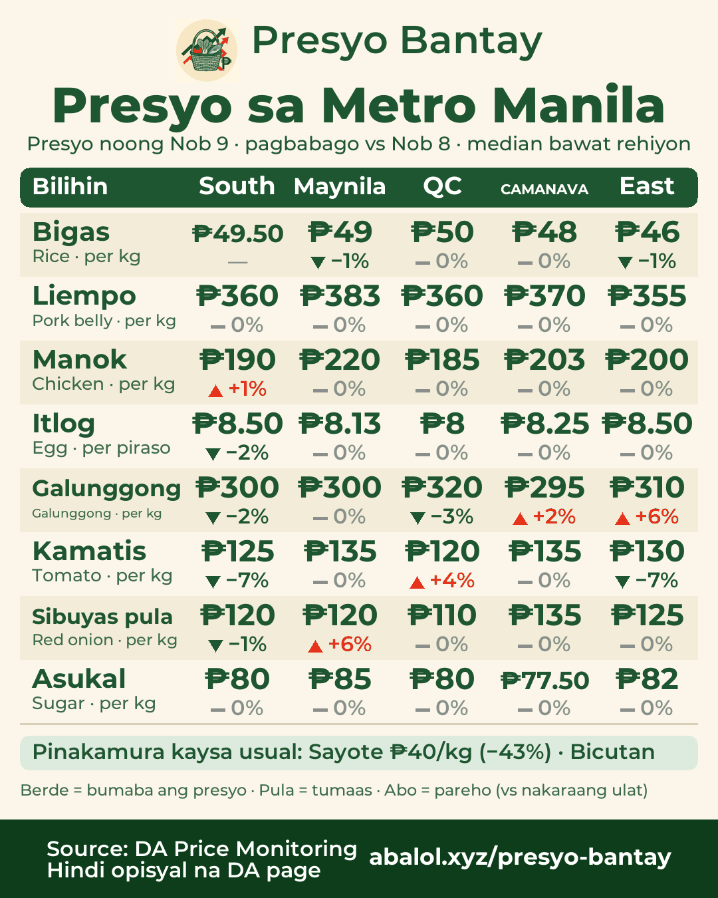
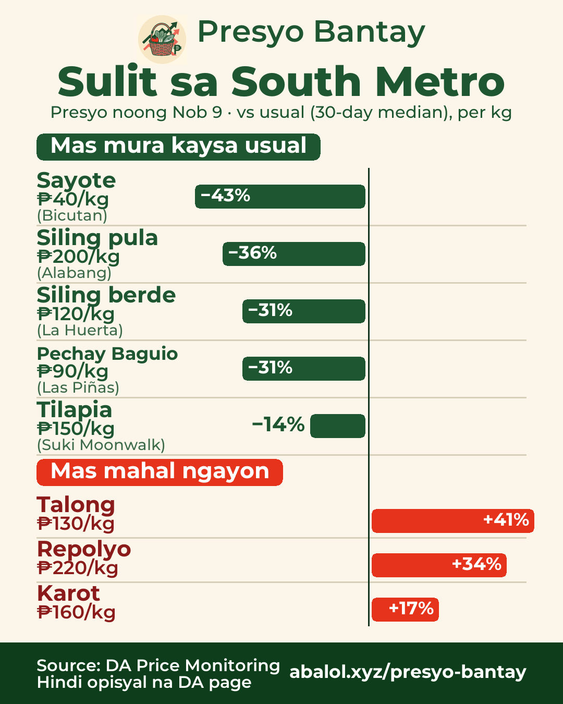
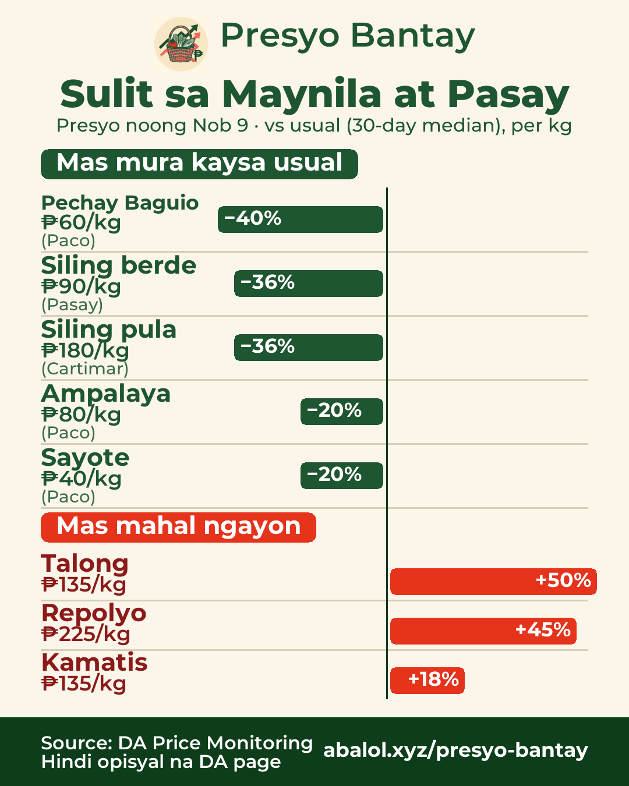
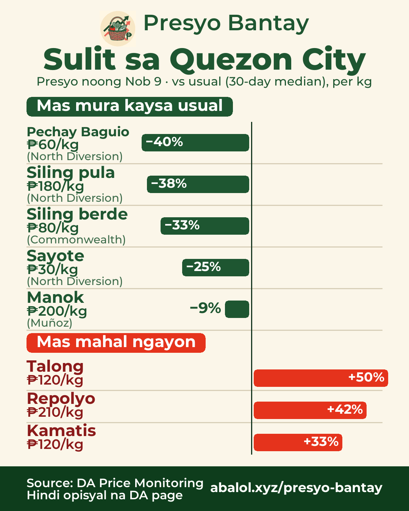
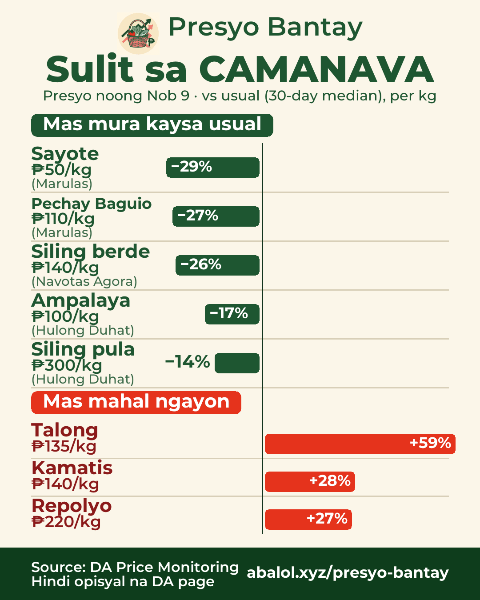
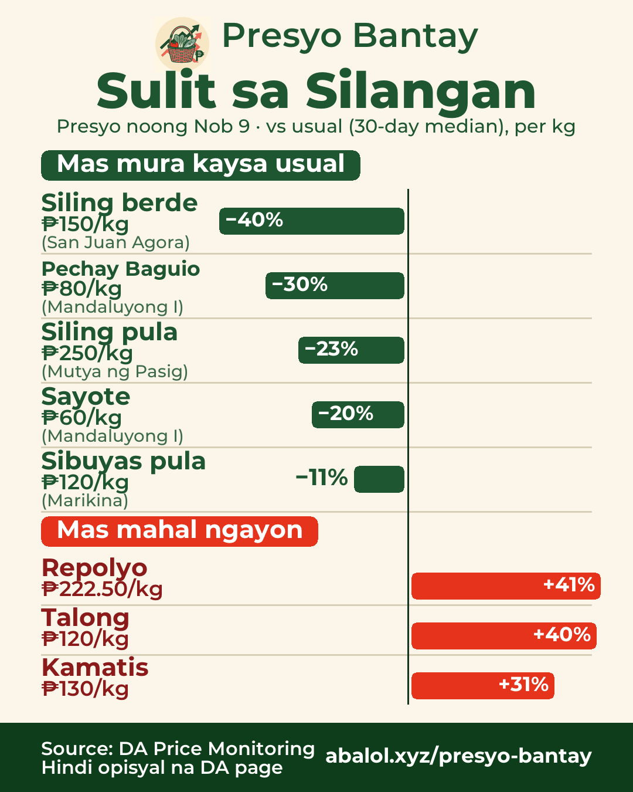

Nob 9, 2026Nov 9, 20262026年11月9日
Sulit sa palengkeMarket deals市場のお買い得
% = kumpara sa usual na presyo (30 araw)% = vs usual price (30-day)% = 30日間のいつもの価格比
Buod sa Metro ManilaMetro Manila summaryメトロマニラ概況

🛒 Presyo sa Metro Manila — noong Nob 9
Median ng mga palengke, kumpara sa Nob 8:
- Bigas ₱49/kg →±0%
- Liempo ₱365/kg →±0%
- Manok ₱200/kg →±0%
- Itlog ₱8.25/piraso →±0%
- Galunggong ₱300/kg →±0%
- Kamatis ₱130/kg ▼−3%
- Sibuyas pula ₱120/kg →±0%
- Asukal ₱80/kg →±0%
⭐ Pinakamura kaysa usual: Sayote ₱40/kg (−43%) · Bicutan
🇬🇧 Metro Manila prices — Nov 9
Market median vs Nov 8:
Rice ₱49/kg →±0% · Pork belly ₱365/kg →±0% · Chicken ₱200/kg →±0% · Egg ₱8.25/pc →±0% · Galunggong ₱300/kg →±0% · Tomato ₱130/kg ▼−3% · Red onion ₱120/kg →±0% · Sugar ₱80/kg →±0%
⭐ Best deal vs usual: Chayote ₱40 (−43%)
🇯🇵 メトロマニラの価格 — 11/9
市場の中央値、11/8比：
米 ₱49/kg →±0%、豚バラ ₱365/kg →±0%、鶏肉 ₱200/kg →±0%、卵 ₱8.25/個 →±0%、ガルンゴン ₱300/kg →±0%、トマト ₱130/kg ▼−3%、赤玉ねぎ ₱120/kg →±0%、砂糖 ₱80/kg →±0%
⭐ いつもより安い：サヨテ ₱40（−43%）
South MetroSouth Metro南部（ラス・ピニャス周辺）

🛒 Sulit sa South Metro — presyo noong Nob 9
✅ Mas mura kaysa usual:
- Sayote ₱40/kg (−43%) · Bicutan
- Siling pula ₱200/kg (−36%) · Alabang
- Siling berde ₱120/kg (−31%) · La Huerta
- Pechay Baguio ₱90/kg (−31%) · Las Piñas
- Tilapia ₱150/kg (−14%) · Suki Moonwalk
⚠️ Mas mahal ngayon:
- Talong ₱130/kg (+41%)
- Repolyo ₱220/kg (+34%)
- Karot ₱160/kg (+17%)
🇬🇧 Deals in South Metro — prices of Nov 9
✅ Chayote ₱40 (−43%), Red chili ₱200 (−36%), Green chili ₱120 (−31%), Pechay Baguio ₱90 (−31%), Tilapia ₱150 (−14%)
⚠️ Pricier: Eggplant ₱130 (+41%), Cabbage ₱220 (+34%), Carrots ₱160 (+17%)
🇯🇵 南部（ラス・ピニャス周辺）のお買い得 — 11/9の価格
✅ サヨテ ₱40（−43%）、赤唐辛子 ₱200（−36%）、青唐辛子 ₱120（−31%）、ペチャイ・バギオ ₱90（−31%）、ティラピア ₱150（−14%）
⚠️ 高め：ナス ₱130（+41%）、キャベツ ₱220（+34%）、にんじん ₱160（+17%）
Maynila at PasayManila & Pasayマニラ・パサイ

🛒 Sulit sa Maynila at Pasay — presyo noong Nob 9
✅ Mas mura kaysa usual:
- Pechay Baguio ₱60/kg (−40%) · Paco
- Siling berde ₱90/kg (−36%) · Pasay
- Siling pula ₱180/kg (−36%) · Cartimar
- Ampalaya ₱80/kg (−20%) · Paco
- Sayote ₱40/kg (−20%) · Paco
⚠️ Mas mahal ngayon:
- Talong ₱135/kg (+50%)
- Repolyo ₱225/kg (+45%)
- Kamatis ₱135/kg (+18%)
🇬🇧 Deals in Manila & Pasay — prices of Nov 9
✅ Pechay Baguio ₱60 (−40%), Green chili ₱90 (−36%), Red chili ₱180 (−36%), Ampalaya ₱80 (−20%), Chayote ₱40 (−20%)
⚠️ Pricier: Eggplant ₱135 (+50%), Cabbage ₱225 (+45%), Tomato ₱135 (+18%)
🇯🇵 マニラ・パサイのお買い得 — 11/9の価格
✅ ペチャイ・バギオ ₱60（−40%）、青唐辛子 ₱90（−36%）、赤唐辛子 ₱180（−36%）、ゴーヤ ₱80（−20%）、サヨテ ₱40（−20%）
⚠️ 高め：ナス ₱135（+50%）、キャベツ ₱225（+45%）、トマト ₱135（+18%）
Quezon CityQuezon Cityケソン市

🛒 Sulit sa Quezon City — presyo noong Nob 9
✅ Mas mura kaysa usual:
- Pechay Baguio ₱60/kg (−40%) · North Diversion
- Siling pula ₱180/kg (−38%) · North Diversion
- Siling berde ₱80/kg (−33%) · Commonwealth
- Sayote ₱30/kg (−25%) · North Diversion
- Manok ₱200/kg (−9%) · Muñoz
⚠️ Mas mahal ngayon:
- Talong ₱120/kg (+50%)
- Repolyo ₱210/kg (+42%)
- Kamatis ₱120/kg (+33%)
🇬🇧 Deals in Quezon City — prices of Nov 9
✅ Pechay Baguio ₱60 (−40%), Red chili ₱180 (−38%), Green chili ₱80 (−33%), Chayote ₱30 (−25%), Chicken ₱200 (−9%)
⚠️ Pricier: Eggplant ₱120 (+50%), Cabbage ₱210 (+42%), Tomato ₱120 (+33%)
🇯🇵 ケソン市のお買い得 — 11/9の価格
✅ ペチャイ・バギオ ₱60（−40%）、赤唐辛子 ₱180（−38%）、青唐辛子 ₱80（−33%）、サヨテ ₱30（−25%）、丸鶏 ₱200（−9%）
⚠️ 高め：ナス ₱120（+50%）、キャベツ ₱210（+42%）、トマト ₱120（+33%）
CAMANAVANorth (CAMANAVA)北部（カマナバ）

🛒 Sulit sa CAMANAVA — presyo noong Nob 9
✅ Mas mura kaysa usual:
- Sayote ₱50/kg (−29%) · Marulas
- Pechay Baguio ₱110/kg (−27%) · Marulas
- Siling berde ₱140/kg (−26%) · Navotas Agora
- Ampalaya ₱100/kg (−17%) · Hulong Duhat
- Siling pula ₱300/kg (−14%) · Hulong Duhat
⚠️ Mas mahal ngayon:
- Talong ₱135/kg (+59%)
- Kamatis ₱140/kg (+28%)
- Repolyo ₱220/kg (+27%)
🇬🇧 Deals in North (CAMANAVA) — prices of Nov 9
✅ Chayote ₱50 (−29%), Pechay Baguio ₱110 (−27%), Green chili ₱140 (−26%), Ampalaya ₱100 (−17%), Red chili ₱300 (−14%)
⚠️ Pricier: Eggplant ₱135 (+59%), Tomato ₱140 (+28%), Cabbage ₱220 (+27%)
🇯🇵 北部（カマナバ）のお買い得 — 11/9の価格
✅ サヨテ ₱50（−29%）、ペチャイ・バギオ ₱110（−27%）、青唐辛子 ₱140（−26%）、ゴーヤ ₱100（−17%）、赤唐辛子 ₱300（−14%）
⚠️ 高め：ナス ₱135（+59%）、トマト ₱140（+28%）、キャベツ ₱220（+27%）
SilanganEast Metro東部

🛒 Sulit sa Silangan — presyo noong Nob 9
✅ Mas mura kaysa usual:
- Siling berde ₱150/kg (−40%) · San Juan Agora
- Pechay Baguio ₱80/kg (−30%) · Mandaluyong I
- Siling pula ₱250/kg (−23%) · Mutya ng Pasig
- Sayote ₱60/kg (−20%) · Mandaluyong I
- Sibuyas pula ₱120/kg (−11%) · Marikina
⚠️ Mas mahal ngayon:
- Repolyo ₱222.50/kg (+41%)
- Talong ₱120/kg (+40%)
- Kamatis ₱130/kg (+31%)
🇬🇧 Deals in East Metro — prices of Nov 9
✅ Green chili ₱150 (−40%), Pechay Baguio ₱80 (−30%), Red chili ₱250 (−23%), Chayote ₱60 (−20%), Red onion ₱120 (−11%)
⚠️ Pricier: Cabbage ₱222.50 (+41%), Eggplant ₱120 (+40%), Tomato ₱130 (+31%)
🇯🇵 東部のお買い得 — 11/9の価格
✅ 青唐辛子 ₱150（−40%）、ペチャイ・バギオ ₱80（−30%）、赤唐辛子 ₱250（−23%）、サヨテ ₱60（−20%）、赤玉ねぎ ₱120（−11%）
⚠️ 高め：キャベツ ₱222.50（+41%）、ナス ₱120（+40%）、トマト ₱130（+31%）